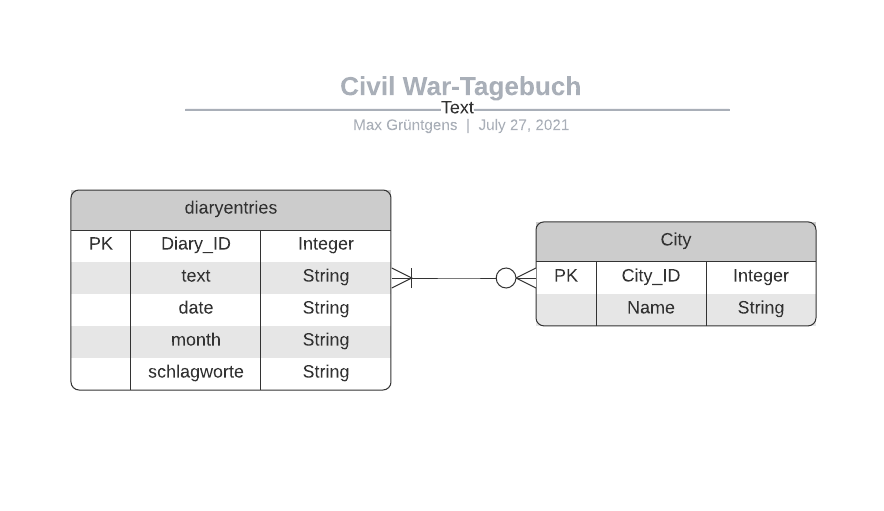
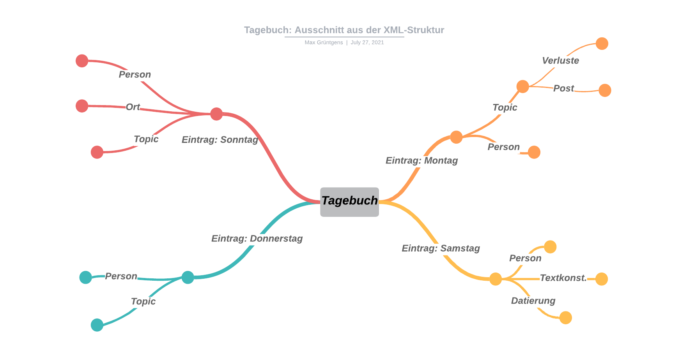
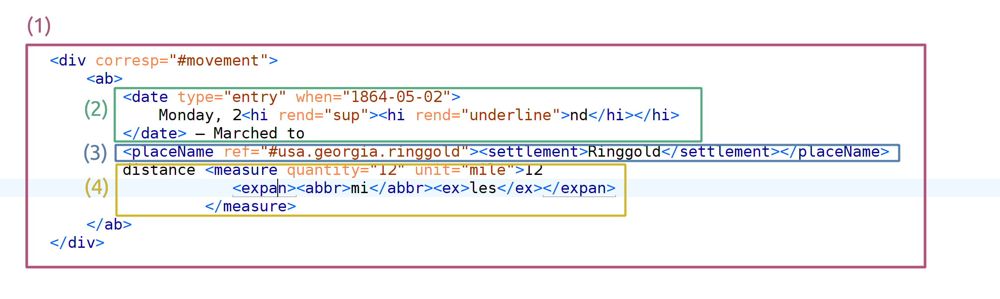
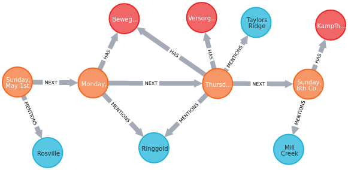

1.6.2021 | Katholische Universität Eichstätt-Ingolstadt
Datenbanken & Geisteswissenschaften
eine kurze Kontextualisierung der Nutzung von Datenbanken in der geisteswissenschaftlichen Forschung
Slides: Link
Max Grüntgens |
 @digicademy |
@digicademy |
 digicademy |
CC-BY 4.0
digicademy |
CC-BY 4.0
Table of Contents
- Forschungsdesign & Wissensmanagement
- Brauche ich eine Datenbank – und wenn ja, wie viele?
- Fazit
01
Forschungsdesign & Wissensmanagement
- Forschung: Was macht geisteswissenschaftliches Forschen und Arbeiten aus?
- Nachvollziehbarkeit: Reliabilität und Validität, Nachvollziehbarkeit und Nachprüfbarkeit
- Wissen, Daten und Information: explizites und implizites, kodifiziertes und personengebundenes Wissen, digitale Daten, Information als Entscheidung
- Modelle: Explizierung, Reduktion, Verzerrung
- Komplexitätsreduktion: Formalisierung und Operationalisierung
- Wissensmanagement: Konzeption, Zettelkasten, Notizbuch, Datenbank, …
- Digitalisierung: Geschlossene Operationssysteme & Anschlussfähigkeit
Forschung
… must predict or infer phenomena that they cannot observe at the time of their research. … the issue is what can be legitimately inferred from available texts. (16)
… can best use computers in their research by thinking of them as aids, not as replacements for the highly developed human capabilities of reading, transcribing, and translating written matter. (23)
Ultimately, all reading of texts is qualitative [oder interpretive], even when certain characteristics of a text are later convertet into numbers. (21)
… involve[s] the rearticulation (interpretation) of given texts into new (analytical, deconstrucive, emancipatory, or critical) narratives accepted within particular scholarly communities […]. (22)
Literatur: Krippendorff: Content Analysis. 2019, 16–22.
Nachvollziehbarkeit
Replicability is the most important form of reliability. […] For a process to be replicable, it must be governed by rules that are explicitly stated and applied equally to all units of analysis. (24–25)
[V]alidity goes further, demanding that the researcher’s process of sampling, reading, and analyzing messages ultimately satisfy external criteria. (25)
Replicability is measurable, and validity is testable, but objectivity is neither. (25)
Literatur: Krippendorff: Content Analysis. 2019, 24–25.
Wissen, Daten, Information
Texts, messages, and symbols never speak for themselves. They inform someone. Information allows a reader to select among alternatives. It narrows the range of interpretations otherwise available. (30)
All theories of reading (hermeneutics) and theories of symbolic forms (semiotics), include theories of message meanings (communication/conversation theory), can be operationalized as processes of moving from texts to the contexts of the texts’ use.
Historiographical [und andere] methods organize available documents [und Wissen, Daten, Information] into webs of inferential relationships that may ultimately answer a historian’s questions. (32)
Modellbildung, implizite Theoriebildungen, Interpretationsentscheidungen, u.a.m. werden durch Code expliziert.
Literatur: Krippendorff: Content Analysis. 2019, 30–32.
Modelle
- … eine Abbildung von etwas.
- … eine reduktionistische und damit immer eine verkürzte Darstellung.
- … pragmatisch in seiner Stellvertreter- oder Ersatzfunktion.
→ Ein Modell zielt auf einen spezifischen Nutzungskontext bzw. ein spezifisches Nutzungskonzept ab.
→ Ein Modell reduziert (unbestimmte) Komplexität, um Anschlussfähigkeit und damit neue (kombinatorische) Komplexität zu ermöglichen.
→ Ein Modell ist in seinem Verhältnis zur wissenschaftlichen Praxis
- augmentierend, da es (arbeitsökonomisch) unterstützt,
- (de)zentrierend, da es Aspekte in den Vordergrund bzw. die Peripherie rückt
- und lenkend, da es geleitete Zugriffe bietet & damit determiniert.
Literatur: Stachowiak: Allgemeine Modelltheorie. Wien u.a. 1973, 128–133; Historical Social Research (18), Suppl. 31 – Models and Modelling between Digital and Humanities.
Die dem Formalisierungs-Prozess einer Modellbildung notwendig inhärente reduktionistische und zentrierende Tendenz führt notwendigerweise zu Verzerrungseffekten.
Verzerrungseffekte treten …
- … bereits in der Datenbasis selbst auf (Unvollständigkeit, Samplingprozess, …).
- … während der Prozessierung der Datenbasis auf (Statistik, Verarbeitungsfehler, …).
- … bei einer notwendigen Dimensionsreduktion, bei der Kontextualisierung und bei einer Übersetzungs- oder Rekonstituierungsleistung auf (Kartierung, Interpretation, Reproduktion, …).
Formalisierung und Operationalisierung
- … dienen beide zur Explizierung und Quantifizierung …
- … fußt notwendigerweise auf einer qualitativen, interpretatorischen und damit klassenbildenden Grundlage …
- … und funktionieren damit innerhalb eines oder in Bezug auf ein Modell.
Formalisierung (im Sinne eines Kalküls) kann verstanden werden als
- … eine Funktion, die bestimmte Parameter entgegennimmt und verarbeitet …
- … und ein (quantifiziertes) Ergebnis zurückgibt (das auf qualitative Kategorien abgebildet werden kann) …
- … und damit zum Testen von Hypothesen eingesetzt werden kann (Falsifikation).
Operationalisierung kann verstanden werden als
- … die Messbarmachung eines Phänomens …
- … und die Bereitstellung desselben als Parameter einer Funktion.
Literatur: Moretti: ‘Operationalizing’: or, the Function of Measurement in Modern Literary Theory, 1–13; Bod: A New History of the Humanities: The Search for Principles and Patterns from Antiquity to the Present, 2, 9, 347, 352, 364–5; Seelig: Praxis empirischer Untersuchungen. Anleitung zur Durchführung … Disziplinen. 23–57; Cady: The Data Science Handbook.
Wissensmanagement
- Wissensmanagemengt verstanden als hermeneutische Spirale aus Rezeption, Interpretation und Synthese/Produktion von Wissen.
- Datenbanken sind Werkzeuge des Wissensmanagements (aber nicht die einzigen).
- Datenbanken können dabei helfen implizite Aspekte von Forschung explizit zu machen, um sie zu verarbeiten, zur Diskussion zu stellen oder einfach um Prozesse transparenter zu gestalten.
- Datenbanken müssen in übergeordnetere Prozesse des Wissensmanagements eingebunden sein, d.h. ihrer Nutzung gehen Abstraktions-, Kommunikations- und Modellierungsprozesse voraus.
- Zentrale Konzeptionsmethode: Domain Driven Design
Literatur: Evans: Domain-Driven Design.Tackling Complexity in the Heart of Software; Grüntgens, Kasper: Nachhaltige Konzeptionsmethoden für Digital Humanities Projekte am Beispiel der Goethe-PROPYLÄEN.
Digitalisierung
- Digitalisierung meint die Rekonstituierung (Reproduktion) eines nicht-digitalen Systems (und damit auch einer Struktur) mit den Elementen eines digitalen Systems.
- Digitale und nicht-digitale Systeme sind operational getrennt, d.h. digitale Operationen sind nicht anschlussfähig für nicht-digitale Operationen.
- D.h. die Ergebnisse digitaler Operationen müssen (und werden unbewusst) mehrschrittig mediatisiert werden, um (für Menschen) anschlussfähig zu sein.
- Digitale Systeme existieren nur im Prozess.
- Datenbanken sind digitale Systeme.
Literatur: Luhmann: Soziale Systeme; Luhmann: Die Wissenschaft der Gesellschaft.
Zwischenfazit
- Datenbanken liegen als spezifische Werkzeuge und Hilfsmittel auf der Schnittstelle der oben angesprochenen Bereiche.
- Datenbanken im besonderen und digitales Arbeiten im allgemeinen sind keine "Selbstläufer".
- Datenbanken (und andere digitale Werkzeuge) müssen sinnvoll und planvoll in bestehende Forschungsprozesse integriert werden, wenn ihre Nutzung erfolgreich sein soll.
- Das erzeugt Aufwand!
02
Brauche ich eine Datenbank – und wenn ja, wie viele?
Datenbanken
- Voraussetzungen
- Arten von Datenbanken
- Suchmaschinen
Frage: Brauche ich eine Datenbank?
Antwort: Höchtswahrscheinlich (noch) nicht. Es kommt darauf an, wie ihr Forschungsprozess aussieht. Haben Sie das Problem, dass …
Haben Sie das Problem, dass …
- … Sie den Überblick über ihre Dokumente verlieren und es Ihnen schwer fällt eine Ablagestruktur/Organisation durchzuhalten?
- … Sie Probleme haben konsistent zu annotieren oder zu exzerpieren?
- … Sie keine strukturierten Abfragen auf Dokumentsammlungen durchführen können?
- … Sie Ihre Daten nur sehr schwer visualisieren können?
- … Sie Excel-Dateien mit mehr als 1.048.576 Zeilen und/oder mehr als 16.384 Spalten benutzen wollen?
- … Sie mit einer großen Menge an hierarchischen, netzwerkartigen oder mehrdimensionalen Daten arbeiten wollen?
Wenn Sie eine oder mehrere dieser Antworten mit "Ja" beantworten, kann die Nutzung einer Datenbank sinnvoll sein.
Voraussetzungen
Datenbanken existieren nicht im luftleeren Raum.
Die Nutzung einer Datenbank verlangt …
- … die Erstellung eines adäquaten Datenmodells im Kontext von Forschungsfrage, Fachdomäne und Material.
- … die Auswahl einer spezifischen Datenbank-Technologie.
- … die Einarbeitung in Definitions-, Abfrage- und Transformationssprachen.
- … die Bereitstellung von Infrastruktur und Wartung der eigentlichen Datenbanksoftware und der Umgebung in der die DB läuft.
- … die Aufbereitung und den Import von Daten.
Die Nutzung von Datenbanken verlangt zumindest einen initialen Aufwand in den Bereichen Konzeption, Datenmodellierung, Aufbereitung und Infrastruktur!
Exkurs
Alternativen zur eigenen Datenbank
- Tabellen + X: Microsoft-Excel, CSV-Tabellen, Knime, OpenRefine, SPSS, R/Python, …
- Zotero: Bibliographie-Datenbank mit umfangreichen Zusatzfeatures.
- Voyant-Tools: Browser-basierte Texte-Analayse- und -Visualisierungs-Suite.
- MaxQDA: Proprietäre Software zur qualitativen (und mit Einschränkungen quantitativen) Datenanalyse.
- OxGarage: Transformations-Tool zu TEI-XML.
- oXygen XML-Editor: Eine der besten XML-Entwicklungsumgebungen. Der Author-Mode bietet die Möglichkeit zur Erstellung von Eingabe- und Analyse-Oberflächen. Ein Beispiel dafür ist die Editionsumgebung Ediarum.
- Nodegoat: ermöglicht es Wissenschaftlern, Datensätze auf der Basis ihres eigenen Datenmodells zu erstellen und bietet relationale Analyse- und Visualisierungsmodi mit räumlichen und chronologischen Formen der Kontextualisierung.
- pgAdmin: Administrations-Oberfläche für postgreSQL-Datenbanken.
- Python, Pandas und Jupyter Notebooks: Interaktive Datenanalyse mit Python im Browser.
- Lokale Suchmaschine: lokale Indizierung von und Suche auf Dokumenten.
Keine eigene Datenbank um der eigenen Datenbank willen! Die Chance ist hoch, dass es für Ihren Forschungsansatz bereits eine Softwarelösung gibt.
Kurzdefinition Datenbank
Datenbanken sind spezialisierte Softwarelösungen, die als Werkzeugevon großen Datenmengen unterstützen.
- die Modellierung (Explizierung),
- die Verwaltung,
- die Speicherung,
- die Abfrage als Bereitstellung von Teilmengen und
- die Analyse
Arten von Datenbanken
Es gibt verschiedene Arten von Datenbanken, die sich durch ihr Datenmodell, ihre Abfrage- und Verarbeitungsmöglichkeiten und durch ihre Optimierungen unterscheiden. Eine für den geisteswissenschaftlichen Kontext sinnvolle Unterscheidung ist die folgende:
- Relationale Datenbanken (Tabellen: SQL)
- MySQL/MariaDB
- PostgreSQL
- Dokument-Datenbanken (Hierarchisch: Dateien, XML, JSON)
- eXist (XML)
- MongoDB (JSON)
- Graph-Datenbanken (Netzwerk: Triple-Stores, Neo4j)
- Neo4j
Jede Datenbank-Art wird von unterschiedlichen Anbietern angeboten. Manche Angebote sind proprietär und kostenpflichtig, andere open source und ohne Lizenzzahlungen nutzbar.
Einige
Beispiele
Beispiel: Die Quelle
Sergeant Wiliam H. H. Enderton war während des Sezessionskrieges Soldat des 34ten Illinois Infanterie-Regiments. In seinem Tagebuch beschreibt er die Atlanta Campaign, das Ende des Krieges und auch Abraham Lincolns Ermordung.
Das Tagebuch hat keinen Umschlag und ist lose mit Faden gebunden. Einige Seiten fehlen, welche die Einträge vom 20.8.1864 bis zum 2.9.1864 sowie die Einträge vom 13.9.1864 bis September 1864, beinhalten.
Bereitgestellt durch Special Collections Dept. at the University of Iowa, Iowa Libraries. Online einsehbar in der Iowa Digital Library.
Die Quelle: Forschungsfragen und Modellierungsansätze
- Basis-Erschließung:
- Personen
- Orte
- Datierungen
- Strukturierung
- Textstruktur und Texttopographie:
- Seiten
- Einrückungen von Tageseinträgen
- Kopfzeilen
- Text-Konstitution:
- Auflösung von Abkürzungen
- Angabe von Texteingriffen durch den Autor Streichungen, Korrekturen, etc.
- Inhaltliche Erschließung:
- Sacherschließung:
- Post und Briefverkehr
- Versorgung und Verpflegung
- Militärische Aufgaben
- Truppenbewegung
- Kampfhandlungen
- Verluste
- Interpretative Erschließung:
- Verluste
- Dauer von Ereignissen
Relationale Datenbank
SQLite
Relationale Datenbank
- Datenhaltung basiert auf Tabellen, also Zeilen, Spalten und Zellen.
- Über eindeutige Werte (primary keys, foreign keys, join tables) können Zeilen zueinander in Bezug gesetzt werden.
- Daten werden mit der Sprache SQL erstellt und abgefragt.
Je rigider, eindeutiger und "tabellenartiger" die Information strukturiert werden kann, desto besser ist SQL nutzbar. Geisteswissenschaftliche Datenbestände erfordern bei Abfrage, Datenhaltung, etc. oft erhöhte Komplexität in SQL.
Beispiel: Relationale Datenbank
- Primary Key
- Eindeutiger Identifikator eines Datensatzes, d.h. einer Zeile in einer Tabelle.
- many-to-many-Beziehung
- Relationale Datenbanksysteme keine direkten Many-to-Many-Beziehung zwischen zwei Tabellen. Daher müssen Many-to-many-Beziehung in zwei One-to-many-Beziehungen aufgeteilt werden, indem Sie in eine dritte Tabelle, eine so genannte Join-Tabelle, verlagert werden.
- Join-Tabelle
- Jeder Datensatz in einer Join-Tabelle enthält ein Abgleichsfeld, das den Wert der Primärschlüssel der beiden Tabellen enthält, die er verknüpft.
Beispiel: Relationale Datenbank

Ein Tagebucheintrag kann mit null, einem oder sehr vielen Ortseinträgen verknüpft sein. Ein Ortseintrag kann mit einem oder sehr vielen Tagebucheinträgen verknüpft sein. Die Beziehung zwischen Tagebucheintrag und Ortseintrag ist eine many-to-many-Beziehung.
Dokumentdatenbank
eXist/XML
XML-Datenbank
- Datenhaltung basiert auf hierarchischer Klammerung von Elementen und Text (Baumstruktur).
- Die Klammerung der Elemente hat semantische Bedeutung. Attribute bilden Information feingranular ab.
- Daten werden mit der Sprache XML erstellt und mit XPath, XSLT und XQuery abgefragt.
Liegt das Augenmerk auf möglichst freier und "interpetativer" Annotation von Textbereichen auf Basis verschachtelter Hierarchien, dann ist XML die Anwendung der Wahl. Das Abbilden überlappender Strukturen führt in XML zu erhöhter Komplexität.
Beispiel: XML
- Elemente
- Machen Strukturen und Information explizit. Elemente werden hierarchisch ineinander verschachtelt.
- Attribute
- Attribute fügen Elementen zusätzliche Information auf Basis von Schlüssel-Wert-Paaren zu.
- XPath
- Abfragesprache, die Elemente auf Grundlage ihrer Verortung im Baum zurückgibt.
Beispiel: XML

Das Tagebuch fächert sich in Tageseinträge auf. Diese fächern sich wiederum in Text und in weitere Elemente, wie Personen-, Orts- oder Sach-Markup auf. Zentral ist, dass es sich um eine hierarchische Baumstruktur handelt, die Überlappungen verhindert.
Beispiel: XML

- Ein Tageseintrag mit Sacherschließung im Attribut corresp.
- Angabe eines Datums mit Normierung im Attribute when. Angabe von Unterstreichung.
- Angabe eines Ortsnamens mit Verweis auf normierte Ansetzung im Metadaten-Kopf.
- Angabe einer "Messung". Auflösung und Expandierung einer Abkürzung.
Graphdatenbank
Neo4j
Graphdatenbank
- Datenhaltung basiert auf Knoten und verbindenden Kanten (Relationen).
- Properties bilden Information feingranularer ab.
- Daten werden mit der Sprache Cypher erstellt und abgefragt.
Sollen netzwerkartige Strukturen, die eher durch ihre Beziehung zueinander als durch ihre eigenen Attribute definiert sind, abgebildet werden, dann bietet sich Neo4j an. Graphen haben keine Probleme mit überlappenden Strukturen, sind aber deutlich komplexer als (rein hierarchische) Ansätze mit XML.
Beispiel: Neo4j

Der Hautstrang im Graph wird durch die Tageseintrags-Knoten gebildet. Diese enthalten den Text als Property. zusätzliche Informationen, um die herum sich Cluster bilden können, sind ebenfalls als Nodes angelegt: Orte, Topics.
Suchmaschinen
Suchmaschinen, Searchengines und Module zur Such-Indizierung bereiten die Inhalte einer Datenbank derart auf, dass performanter gesucht werden kann. Zudem bieten eigentlich alle Suchmaschinen auch eine interne Prozessierung auf Basis von Natural Language Processing an, die es erlaubt lemmatisierte Suchen oder Fuzzy-Searches zu nutzen.
LunrJS
- Die zu indizierenden Daten werden als JSON-Daten importiert.
- Eine Suche erfolgt über JavaScript.
[ {
"name": "1864-05-01",
"text": "Sunday, May 1st, the 2nd Division 14th Army Corps still at Rosville Georgia.",
"tags": ""
}, {
"name": "1864-05-02",
"text": "Monday, 2nd – Marched to Ringgold distance 12 miles",
"tags": "movement"
}, {
"name": "1864-05-05",
"text": "Thursday. – 5th the Division marched one mile south of Taylors Rridge; The 34th went back to Ringgold to obain new guns. & got mail Saw some of the 75th",
"tags": "movement provisioning mail"
}, {
"name": "1864-05-07",
"text": "Saturday, 7th Division marched to Buzard Roost skirmishing all the way. the 4th Army Core. took Tunnel Hill",
"tags": "movement combat"
}, {
"name": "1864-05-08",
"text": "Sunday, 8th Companies A F & B went on picket Saturday evening came of Sunday PM & the Regiment was sent to take a position on a hill. Company A deployed as skirmishers. waded Mill Creek took a hill & fought till dark; then went to camp.",
"tags": "movement combat"
} ]
03
Fazit
Fazit
- Digitales Arbeiten ist kein Selbstläufer, sondern erzeugt Aufwände.
- Digitales Forschen kann nur dann gelingen, wenn es sinnvoll konzipiert und eingebettet wird.
- Es gibt bereits viele gute Softwarelösungen für digital unterstützte geisteswissenschaftliche Forschung.
- Jeder kann die eigene Forschungsarbeit durch digitale Komponenten ergänzen und erleichtern!
F I N I S
Thank you
Noch Fragen?
🤖
Literatur
Eine kommentierte Literaturliste finden Sie hier.
Download
- Link to presentation
- License: CC-BY 4.0, Author